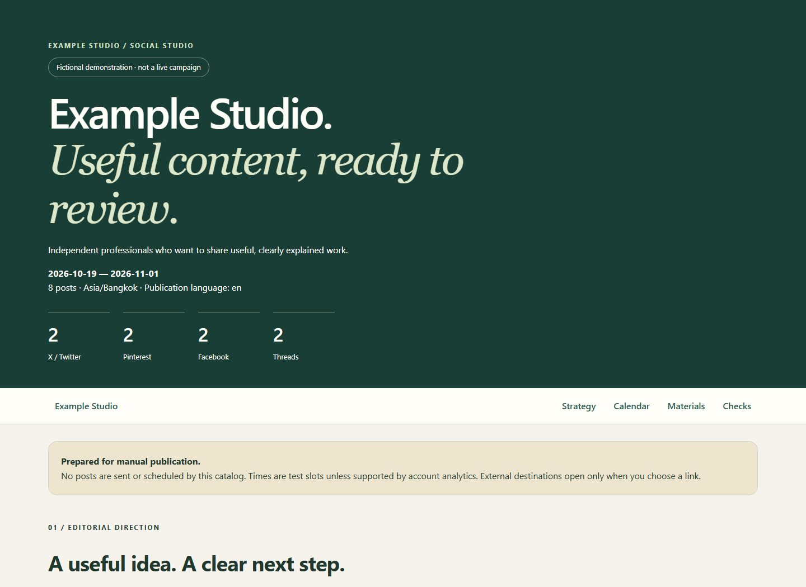

Reusable agent skill
Useful content.
A complete local kit.
Adapt a researched social campaign to any website, audience, publication language, and set of networks. Get finished copy, images, alt text, checked destinations, and an offline catalog.

Start with your brief
Provide the site, audience, goal, dates, timezone, platforms, tone, and publication language. The skill researches and adapts the material; the helpers package and validate it.
Use $social-content-kit to prepare my next social campaign. Save the complete kit locally. Do not publish.